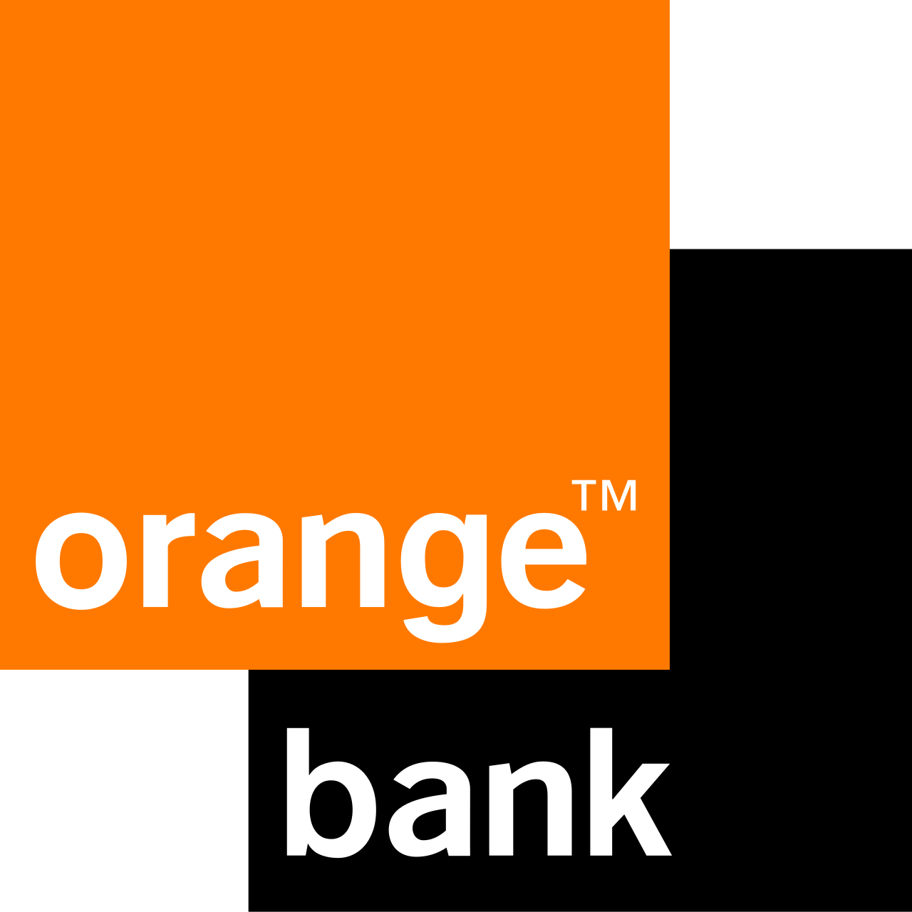
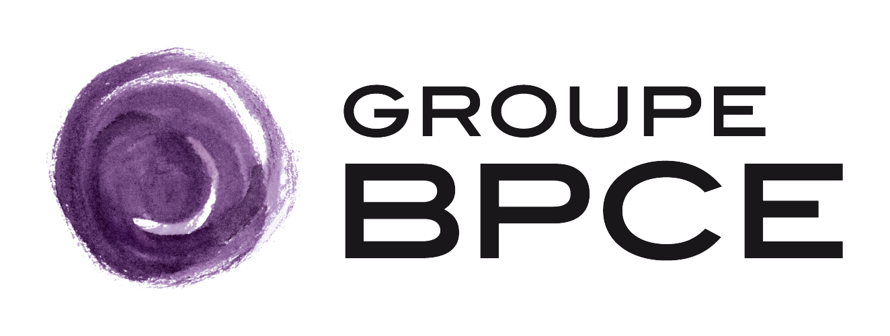
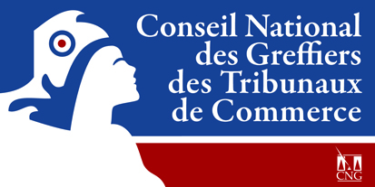
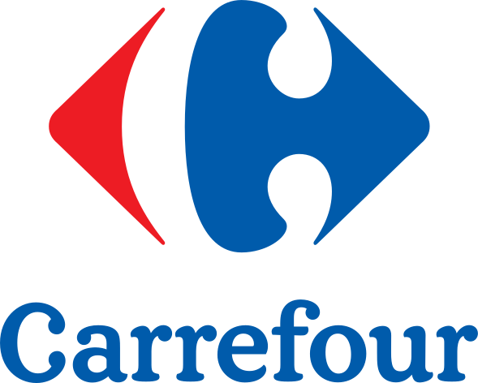

Transition Numérique
des Systèmes d'Information
Comprendre, expérimenter et piloter les transformations technologiques des entreprises : théorie, retours d'expérience (REX), architecture logicielle et réalisation d'un projet en équipe.
- · Manageur IA & Blockchain
- · Consultant Senior et chef de projet Blockchain
- · Consultant technico-fonctionnel IA




Les intervenants du module
Debuiche
Rheny
Charrieau
De Ciancio
Quatre ruptures technologiques majeures du SI
Intelligence Artificielle
Modèles de fondation, RAG documentaire, agents autonomes et outils bornés (MCP).
Data Management
Graphes de connaissances, Data Mesh, KM Mesh, Data Products et GraphRAG.
IoT & Réseaux
Capteurs physiques, flux temps réel, périphérie (Edge) et ancrage opérationnel.
Blockchain & Web3
Registres distribués, confiance décentralisée, traçabilité vérifiable et tokenisation.
Chaque technologie n'est qu'une facette de la donnée : l'IA la consomme, les graphes l'organisent, la blockchain la sécurise, l'IoT la capte. Sans gouvernance et architecture de données rigoureuses, aucune transformation ne dure.
Le Hype Cycle : comprendre où en est une technologie
Une percée technologique suscite curiosité et premières démonstrations. Les médias s'emballent.
Surestimation massive : tout le monde y croit, les PoC se multiplient, les budgets s'envolent.
Les limites apparaissent : projets abandonnés, attentes revues et consolidation des acteurs.
Cas d'usage réels émergent, bonnes pratiques se formalisent. Adoption sélective.
La valeur est mieux établie et les usages se stabilisent dans le SI.
Quatre piliers d'apprentissage complémentaires
Théorie & Concepts
Apports synthétiques pour poser des modèles mentaux clairs, le vocabulaire partagé et les mécanismes fondamentaux.
Retours d'Expérience
Confrontation aux réalités de prod : REX projet L'Oréal, REX Data Viz, passage à l'échelle, gouvernance et AI Act.
Architecture & TP
Capsules d'ingénierie logicielle (Clean Code, Hexagone, SOLID) et manipulation guidée sur des TP ciblés (MCP, Graphes).
Projet en équipe
Réalisation concrète en équipe de 4-5 d'un assistant métier de bout en bout, enrichi séance après séance de nouvelles capacités.
Ce que nous allons explorer en théorie
IA Générative & Agents
- Modèles LLM, tokens, contexte, prompt engineering et harness complet.
- Sécurité, hallucinations, alignement et garde-fous / AI Act.
- Agents autonomes à boucle bornée, outils et protocole MCP.
Data Management & Graphes
- Graphes de connaissances, ontologies & concept GraphRAG.
- Paradigmes modernes : Data Mesh, KM Mesh, Data Products.
- Gouvernance fédérée, qualité, stockage polyglotte & vectoriel.
IoT & Interconnexion
- Capteurs, Edge Computing et traitement à la périphérie.
- Protocoles d'interconnexion : MQTT, CoAP, LPWAN, WebSockets.
- Ingestion temps réel de flux d'événements et architectures distribuées.
Blockchain & Web3
- Réseau décentralisé, cryptographie et consensus (PoS, PoW).
- Registres immuables, Smart Contracts et tokenisation d'actifs.
- Interopérabilité multi-chaînes (bridges) et cas d'usage métiers.
Cloud Native & Infra
- Conteneurs (Docker), serverless et résilience distribuée.
- CI/CD, automatisation, secrets et observabilité des pipelines.
- FinOps : modélisation des coûts d'exécution & souveraineté.
Quantique & RSE
- Intro au Quantique (15 min max) : qubits, superposition, intrication et rupture cryptographique post-quantique.
- RSE & Numérique Responsable (15 min max) : empreinte carbone de l'IA/Cloud, Green IT, sobriété et éthique.
L'architecture au service de la pérennité du SI
Clean Code, SOLID et les ports LLM sont travaillés en S2 ; l'architecture hexagonale complète arrive en S4 avec le domaine et l'API.
Architecture Hexagonale, Domaine & API
Isoler le Cœur de Domaine Métier de tout framework, base de données ou fournisseur d'IA :
- Domaine : entités, valeurs et invariants indépendants des technologies.
- API : nouvel entrypoint qui appelle le même use case que l'interface.
Clean Code, SOLID, SRP & Ports
Garantir que le code reste lisible, testable, maintenable et facilement modifiable en équipe :
- SRP (Single Responsibility) : un composant n'a qu'une seule raison d'évoluer.
- DIP & Ports : brancher fake et LLM live sans modifier le use case.
Le projet en équipe : un assistant métier augmenté
Concevoir et défendre un produit utile, de bout en bout.
Chaque groupe de 3 à 4 étudiants choisit un domaine (finance, santé, juridique, supply chain, cybersécurité, énergie...).
Vous partez du socle fourni et intégrez progressivement les technologies vues en cours pour construire un assistant complet.
Entités, filtres, règles métier et agrégations chiffrées précises.
Recherche sémantique sur texte libre avec citations obligatoires des sources.
Raisonnement sur les liens multi-niveaux, dépendances et GraphRAG.
Capacité d'action autonome bornée pour combiner ces sources et répondre.
La trajectoire globale : 8 séances, 2 volets complémentaires
Soutenance Finale
La notation finale
1. Participation en classe
- Implication & Kahoot
2. Projet (En groupe)
- Problématique & Présentation de la solution
- Architecture (high level & logicielle)
- Réalisation d'un démonstrateur
- Code & améliorations possibles
3. TP (En groupe)
Différents sujets pour vous aider dans votre projet
Le projet de fin d'année est évalué collectivement ; la participation est individuelle et continue tout au long du semestre.
Data Management
& Blockchain
Architectures modernes de la donnée, paradigmes Data Mesh et registres distribués — les fondations techniques du module.
De la source à la valeur
Data Mesh : des produits autonomes, des règles communes
La blockchain : du wallet au registre
Le Projet en Équipe
en Pratique
Comment choisir un bon cas d'usage, structurer vos questions, éviter les pièges et réussir votre première séance.
Le test des 4 questions clés
Un bon cas d'usage ne force aucune technologie : il suscite 4 types de questions naturellement différentes.
Attributs précis, montants, dates, filtres booléens, agrégations chiffrées.
Ex: "Combien d'incidents critiques ont été déclarés sur le serveur X en novembre ?"
Le vocabulaire de l'utilisateur diffère de celui du document source.
Ex: "Quelle est la procédure si un sous-traitant perd ses accès de sécurité ?"
Navigation multi-niveaux, impacts indirects, cascades d'événements.
Ex: "Quels services applicatifs dépendent de l'API de paiement qui a expiré ?"
L'agent orchestre recherche textuelle, requête graphe et filtre structuré.
Ex: "Résume les risques des contrats liant nos 3 fournisseurs les plus vulnérables."
Bons candidats vs Pièges fréquents
Exemples de sujets riches et pertinents
- Conformité & Risques Financiers : Réglementations (RAG), participations et filiales (Graphe), transactions (SQL).
- Gestion d'incidents IT & CMDB : Documentation de résolution (RAG), topologie réseau et serveurs (Graphe), logs (SQL).
- Recherche Médicale & Essais : Publications scientifiques (RAG), interactions molécules/gènes (Graphe), cohortes (SQL).
- Marchés Publics & Appels d'Offres : Cahiers des charges (RAG), groupements d'entreprises (Graphe), montants (SQL).
Sujets pièges ou artificiels
- Le gestionnaire de tâches (ToDo-List) : Tout se résout en SQL. Le RAG et le graphe sont totalement artificiels.
- L'e-commerce basique (catalogue/prix) : Pas de raisonnement relationnel. Le "graphe" Produit → Catégorie est creux.
- La FAQ interne RH pure : Idéal pour un simple RAG documentaire, mais sans aucune dimension relationnelle.
- Données d'entreprise réelles et secrètes : Strictement interdit. Privilégiez l'Open Data ou des données synthétiques.
Le projet est évalué selon 4 dimensions
Cas d'Usage & Données
Clarté du problème métier, personas, vocabulaire partagé et modélisation du graphe.
Architecture & Qualité
Frontières hexagonales, domaine pur, tests automatisés pertinents et démarrage local reproductible.
Produit & Flux IA
Scénario complet démontrable, RAG sourcé, tools utiles et exploitation réelle du graphe.
Défense & Recul
Compréhension individuelle de l'architecture, explication des flux et lucidité sur les limites du système.
Votre feuille de route pour cette séance
Groupes équilibrés de 4 à 5 personnes. Diversité des profils (métier, dev, data).
Forker le dépôt template et lancer l'environnement local avec uv ou Python.
Définir le problème métier, les personas et valider les 4 types de questions.
Éditer 1_projet.py : problème, utilisateurs, données et questions types.
Le Premier Succès Visible
À la fin de la séance, chaque groupe dispose :
- D'un dépôt GitHub cloné et partagé par tous les membres
- D'une application locale qui tourne en 1 commande
- D'une vitrine personnalisée et commitée dans le fork
- D'un cas d'usage validé par l'enseignant
Prêts à explorer les transformations ?
Constituez vos équipes, clonez le socle et commencez à façonner l'assistant métier de votre groupe.